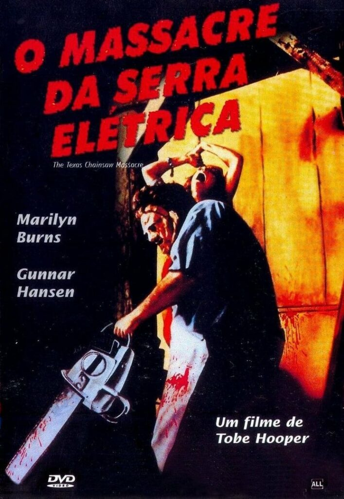
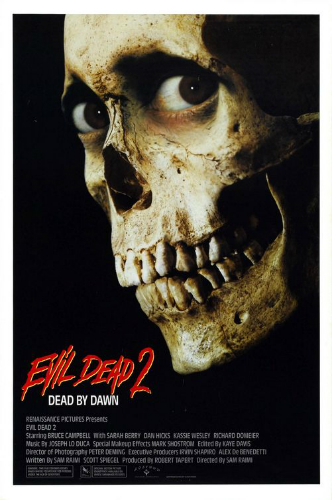
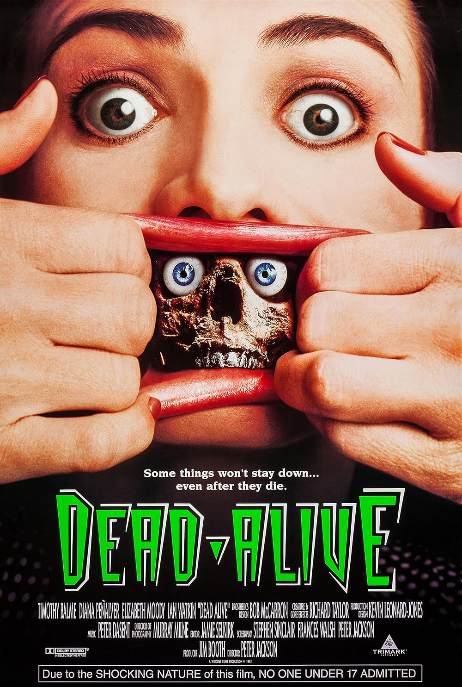

Trash Cult: O Charme Bizarro dos Filmes de Terror dos Anos 70 e 90
Prepare-se para uma viagem ao submundo do cinema de terror. O termo **"trash cult"** refere-se àqueles filmes que, muitas vezes produzidos com orçamentos limitados e criatividade sem igual, desafiam as convenções do cinema "sério". Nos anos 70 e 90, essa vertente floresceu, nos presenteando com obras que são intencionalmente bizarros, estranhas, e que, por isso mesmo, conquistaram uma legião de fãs dedicados. Venha entender o charme desses clássicos que são "tão ruins que são bons" ou simplesmente únicos.



O Que é o "Charme Bizarro" do Trash Cult?
O cinema trash cult não se prende a regras. Ele abraça o exagero, os efeitos práticos duvidosos, o humor negro e a completa falta de limites. É um estilo que valoriza a subversão e o choque, muitas vezes intencionalmente, para provocar uma reação no público. Nos anos 70, com o surgimento do cinema independente e o declínio das restrições de censura, e nos anos 90, com a popularização do vídeo e a expansão de nichos, esses filmes encontraram seu público e se tornaram fenômenos underground.
Por Que Amamos o Trash Cult?
- Autenticidade: Muitos desses filmes são feitos com paixão, sem as amarras de grandes estúdios, resultando em visões singulares e não filtradas.
- Quebra de Expectativas: Eles nos surpreendem com tramas inesperadas, personagens excêntricos e reviravoltas que fogem do comum.
- Humor Involuntário (ou Intencional): A estranheza e o absurdo muitas vezes levam a risadas, transformando o medo em uma experiência catártica e divertida.
- Efeitos Práticos Criativos: Com orçamentos apertados, diretores e artistas de efeitos especiais precisavam ser engenhosos, criando criaturas e gore memoráveis.
Destaques Inesquecíveis: Exemplos do Trash Cult
1. O Massacre da Serra Elétrica (The Texas Chain Saw Massacre - 1974)
Considerado um marco do terror independente, com sua atmosfera crua e perturbadora que marcou uma geração. O filme estabeleceu Leatherface como um ícone do horror e influenciou inúmeros slashers.
2. Uma Noite Alucinante 2 (Evil Dead II - 1987)
Uma sequência que é ao mesmo tempo um remake, mergulhando no terror cômico com Bruce Campbell e efeitos gore exagerados, solidificando o estilo único de Sam Raimi.
3. Fome Animal (Braindead/Dead Alive - 1992)
Antes de dirigir "O Senhor dos Anéis", Peter Jackson nos deu uma das comédias de zumbis mais sangrentas e hilárias de todos os tempos, um festival de gore e absurdo que é puro deleite trash.
O universo do trash cult é vasto e cheio de surpresas. Se você está cansado do terror convencional e busca algo diferente, com um toque de bizarrice e muita personalidade, comece sua exploração por essas décadas. Você pode descobrir seu novo clássico favorito que desafia todas as expectativas!